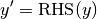

Function RK4_step_2_no_ice¶
Defined in File rk4.h
Function Documentation¶
-
void
RK4_step_2_no_ice(v_rev &ynew, v_rev &yold, const reference_quantities_t &ref, model_constants_t &cc, nc_parameters_t &nc, bool fixed)¶ Compute a single step using the Runge-Kutta 4 method for the ODE
with old system state yold and new system state ynew. It uses the 2 moment bulk scheme from 10.1175/JAS3980 without ice.
- Parameters
ynew: On out: new system stateyold: Old system stateref: Pointer to reference quantities to transform between unitscc: Pointer to constants from the modelnc: Pointer to parameters from the netCDF filefixed: If True: Do not change pressure, temperature and ascent (w)